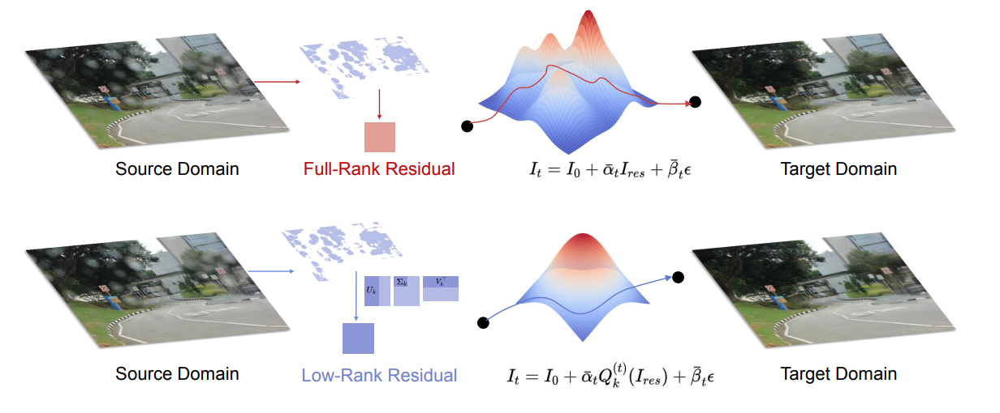
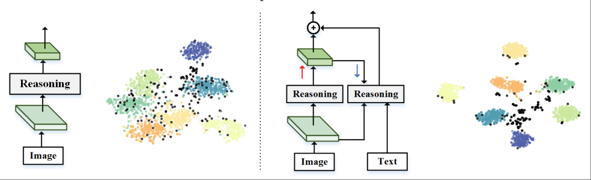
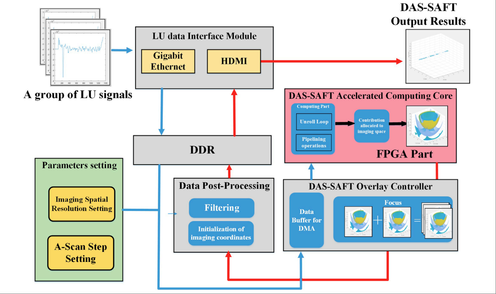

Junfu Tan (谭钧夫)
Generative Models, Geometric Neural Network and AI4Science.
I am an incoming Ph.D. student at HKU, co-supervised by Feifei Wang, Liangqiong Qu. I received my dual M.S. in Electrical and Computer Engineering in the Georgia Tech and TJU. I received my B.S. in Computer Science from NJUST.
My research interest includes Generative Models, Geometric Neural Network and AI4Science.
📖 Education
-
The University of Hong Kong (HKU)Hong KongPh.D. Student in Electrical and Computer Engineering (ECE)Sep. 2026 - Present
-
Georgia Institute of Technology & Tianjin UniversityShenzhen / TianjinDual M.S. in Electrical and Computer Engineering (ECE)Aug. 2023 - Jun. 2026
-
Nanjing University of Science and TechnologyNanjingB.E. in Computer Science (CS)Aug. 2018 - Jun. 2022
💻 Internships
-
MicrosoftShanghaiAI4Science Research InternJan. 2025 - Jul. 2025
🔥 News
- 2026.02: 🎉 A Diffusion model paper accepted by CVPR 2026
- 2025.07: 🎉 An Open-Set Recognition paper accepted by ICCV 2025
- 2025.01: Joined
 Research as an intern, responsible for the design and development of the MatterSim model.
Research as an intern, responsible for the design and development of the MatterSim model.
📝 Publications
CVPR 2026

Low-Rank Residual Diffusion Models
- A bidirectional reasoning mechanism is proposed: through forward visual feature refinement and reverse multimodal semantic guidance (based on CVAE)
ICCV 2025

MPBR: Multimodal Progressive Bidirectional Reasoning for Open-Set Fine-Grained Recognition
- A bidirectional reasoning mechanism is proposed: through forward visual feature refinement and reverse generative guidance.
ARXIV
MatterSim-MT: A multi-task foundation model for in silico materials characterization
- Material property characterization encounters major bottlenecks. This work presents MatterSim-MT, a materials multitask foundation model. Pre-trained on extensive datasets and fine-tuned for diverse physical properties, it delivers high-precision complex material simulations. Boasting strong scalability and adaptability, it enables efficient, accurate material simulation and characterization.
Arxiv
,
KappaFormer: Physics-aware Transformer for lattice thermal conductivity via cross-domain transfer learning
- To address the challenge of data scarcity in predicting lattice thermal conductivity, we have developed KappaFormer—a model that integrates physical mechanisms—to efficiently screen for low-thermal-conductivity materials and elucidate their heat conduction mechanisms, thereby facilitating the discovery of novel materials.
Arxiv
Probing the Limit of Heat Transfer in Inorganic Crystals with Deep Learning
- Leveraging deep learning and first-principles calculations, this study conducted a large-scale screening of the thermal conductivity of inorganic crystals. It confirmed that diamond represents the upper limit of thermal conductivity for stable crystals under ambient pressure, and also identified over twenty novel crystals exhibiting superior thermal conductivity compared to silicon. These findings and the screening methodology serve as a valuable reference for materials research and development.
Front. Mater. 2024

Laser ultrasonic time-domain synthetic aperture focusing (SAFT) co-overlay software and hardware (COSH) computing system based on ZYNQ
- SAFT-COSH significantly accelerates DAS-SAFT: The hardware-software collaboration based on Zynq reduces the computing time to 1/28 of the original.